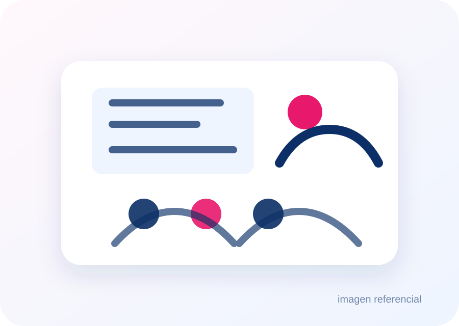
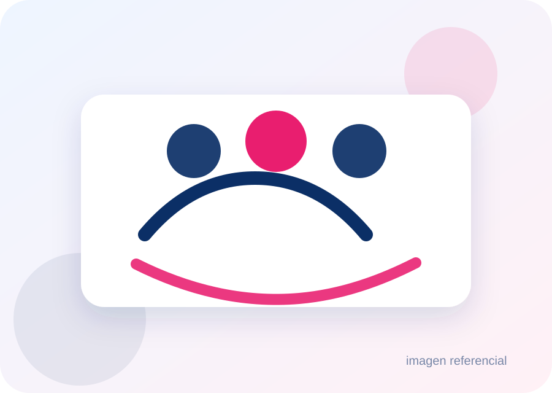
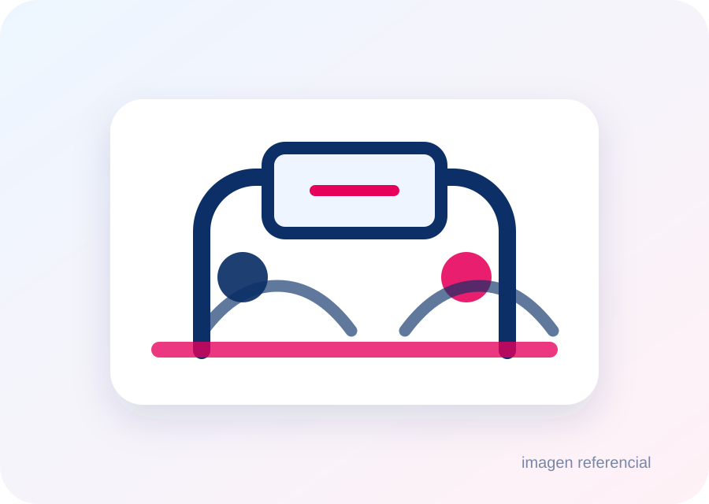

Brindar apoyo integral a personas con adicciones y a sus familias, promoviendo recuperación, bienestar y reinserción social mediante prevención, tratamiento y acompañamiento continuo.
Programa integral de apoyo
Un sendero posible para volver a empezar.
Acompañamos a personas que atraviesan una adicción y a sus familias con orientación, tratamiento, prevención y apoyo sostenido para la reinserción social.
Prevención
Tratamiento
Familia
Reinserción
Apoyo integral para personas con adicciones y sus familias.
Un enfoque humano, profesional y comunitario, con continuidad en el tiempo.
Las adicciones no afectan solo a una persona. También golpean la vida emocional, familiar, social y económica de quienes la rodean. Senderos de Libertad nace para acompañar ese proceso con respeto, cercanía y herramientas concretas.
Quiénes somos
Una fundación creada para acompañar procesos reales.
Creemos en las segundas oportunidades, pero también en el trabajo serio: evaluación, acompañamiento profesional, redes familiares y continuidad.
Ser una fundación referente en prevención y tratamiento de adicciones, reconocida por reducir el estigma y contribuir a una comunidad más saludable, solidaria y resiliente.
Programas
Cuatro líneas de trabajo, una misma dirección.
La web queda pensada para explicar la ayuda sin abrumar: qué hacemos, para quién es y cómo se da el primer paso.
01
Prevención y sensibilización
Talleres educativos, charlas para familias, docentes y líderes comunitarios, además de campañas de concientización en redes y espacios locales.
Ver enfoque02
Orientación y tratamiento
Primera orientación, evaluación, consejería, terapia individual, terapias grupales, grupos de apoyo, centro de día y coordinación con redes de salud cuando corresponda.
Ver modelo03
Acompañamiento familiar
Apoyo a familiares, talleres de límites saludables, codependencia y herramientas para sostener el proceso sin cargarlo en silencio.
Ver familias04
Reinserción social y laboral
Talleres de habilidades para la vida, capacitación, orientación laboral y vinculación con oportunidades de empleo o emprendimiento.
Ver reinserción
Prevención
La prevención tiene que estar cerca de la comunidad.
La fundación puede trabajar con instituciones educativas, organizaciones sociales y familias para hablar de consumo, conductas adictivas, salud mental y redes de apoyo con un lenguaje claro, sin juicio y sin miedo.
- Talleres educativos y comunitarios.
- Charlas para familias, docentes y referentes locales.
- Campañas sobrias de concientización y reducción del estigma.
Modelo de trabajo
Evaluar, acompañar y sostener.
La propuesta se inspira en una mirada integral: la adicción requiere cuidado continuo, apoyo profesional, trabajo entre pares y participación familiar.
Primer contacto
Escucha inicial, orientación y contención para ordenar la situación sin exponer a la persona.
Evaluación
Revisión del caso, red familiar, nivel de riesgo, necesidades clínicas y alternativas disponibles.
Plan de apoyo
Definición de un camino posible: terapia, grupo, centro de día, residencia o derivación.
Tratamiento
Acompañamiento individual, grupal y familiar, con foco en abstinencia y habilidades para la vida.
Reinserción
Trabajo sobre autonomía, rutina, vínculos, capacitación, empleo o emprendimiento.
Seguimiento
Continuidad, redes de apoyo e indicadores de avance para no dejar solo el proceso.
Familias
La familia también necesita ser acompañada.
Muchas veces los cercanos llegan cansados, confundidos o con culpa. La web debe abrirles una puerta clara: pedir orientación, entender límites saludables y dejar de vivir el proceso en soledad.
Grupos de apoyo
Espacios de escucha y orientación.
Límites saludables
Herramientas para cuidar sin desgastarse.
Asesoría social
Acompañamiento en casos especiales.
Continuidad
Seguimiento durante el proceso.


Reinserción
Recuperarse también es volver a construir vida.
La recuperación no termina en dejar una conducta. También implica recuperar confianza, rutina, vínculos, habilidades y oportunidades. Por eso la reinserción debe estar visible desde el inicio del sitio.
- Habilidades para la vida: comunicación, manejo del estrés y resolución de conflictos.
- Capacitación en oficios o herramientas laborales.
- Orientación para empleo, emprendimiento y redes de apoyo.
Transparencia e impacto
Una fundación confiable también muestra cómo avanza.
Esta sección queda preparada para crecer con reportes, indicadores, actividades, convenios y rendición de cuentas.
Estructura
Equipo humano, técnico y voluntario.
La maqueta deja planteada una estructura sobria: dirección, coordinación de áreas, equipo técnico y voluntariado. Cuando estén los nombres oficiales, se puede sumar una sección de equipo con fotografías reales.
Junta Directiva
Dirección estratégica y resguardo institucional.
Dirección Ejecutiva
Gestión operativa y coordinación general.
Coordinaciones de Área
Prevención, tratamiento, familias y reinserción.
Equipo Técnico
Salud, educación, apoyo social y acompañamiento terapéutico.
Voluntariado
Apoyo transversal y participación comunitaria.
Colaborar
Hay muchas formas de abrir un sendero.
La fundación puede recibir apoyo de personas, empresas e instituciones. Esta zona queda lista para donaciones, voluntariado, alianzas y eventos de recaudación.
Contacto
Pedir ayuda no tiene que ser perfecto. Tiene que empezar.
Puedes escribir para orientación inicial, apoyo familiar, derivación, voluntariado o colaboración institucional. La primera respuesta debe ser simple, respetuosa y reservada.
Si existe riesgo inmediato para una persona, acude a urgencias o contacta los servicios de emergencia de tu zona.